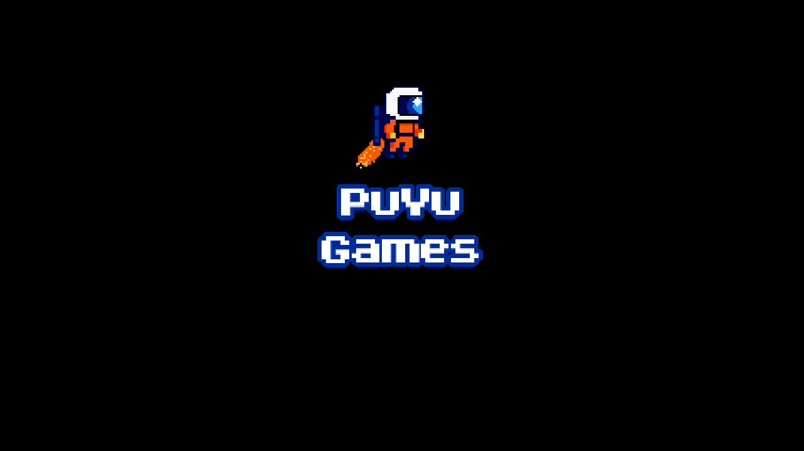

Idle Tides
Incremental · PC · En développement
PuYu Games crée des jeux chaleureux, intelligents et un peu obsessionnels — à jouer à son rythme.
↓
Idle / Incremental · PC
Pêche à ton rythme, débloque des bateaux pour automatiser ta flotte et aide l’île à gérer sa surpopulation de poissons.
Voir sur Steam ↗Une marée à la fois
Nous privilégions les mécaniques simples qui révèlent une profondeur tranquille.
Incremental · PC · En développement
Le prochain monde est encore sous la surface.
Premiers systèmes de collection et journal de bord.
Les portes de l'île s'ouvrent pour la première fois.
Le début officiel de l'aventure.
PuYu Games est un petit studio indépendant basé à Montréal. On aime les jeux qui respectent ton temps, les systèmes qui récompensent la curiosité et les mondes où il fait bon revenir.
Parler avec nous ↗Design · Code · Café
Nos meilleurs coéquipiers
On garde toujours l'œil ouvert.